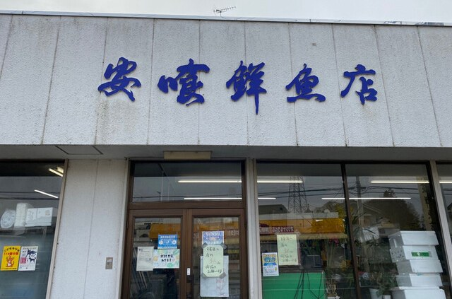
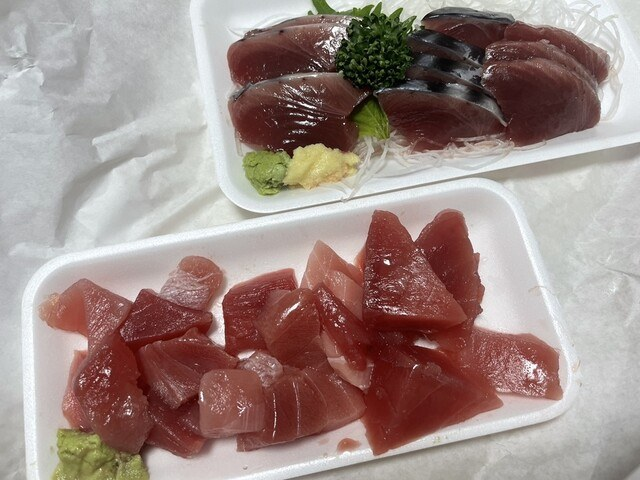
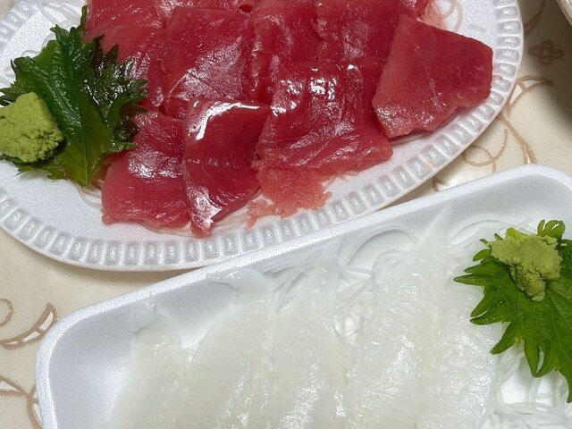
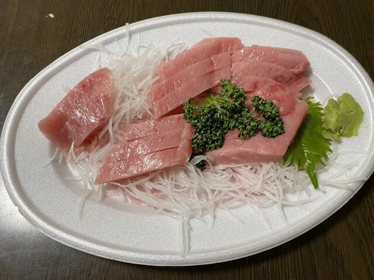
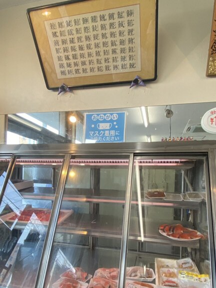
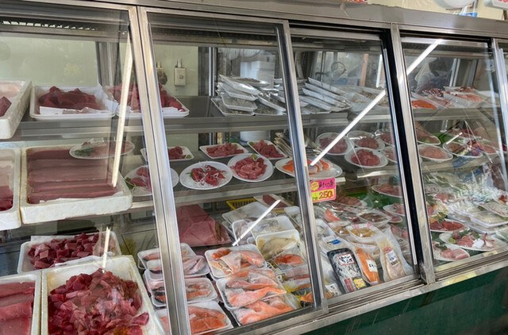
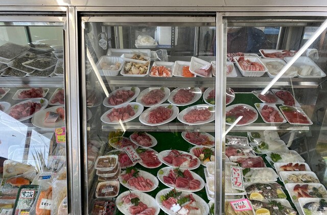
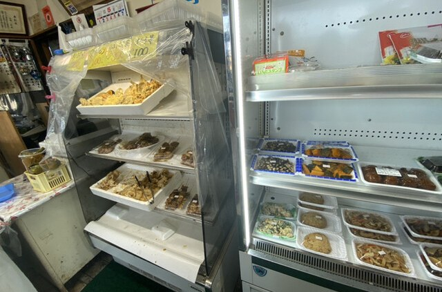
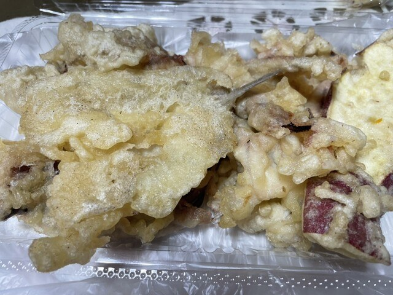
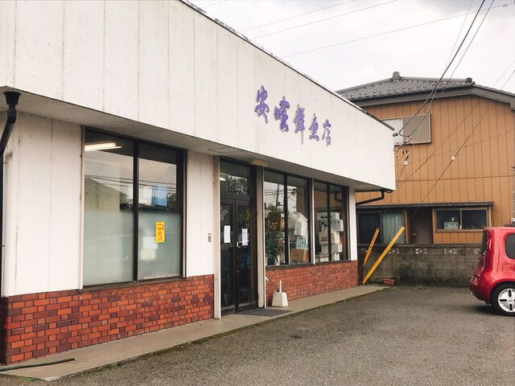

ガラスケースに、小分けにした皿を並べております。お刺身も天ぷらも、そのままお持ち帰りいただけます。
その日の入荷次第で、売り切れてしまう品がございます。お電話でお確かめのうえ、お越しくださいませ。

大とろ、中とろ、赤身。中落ちに、塩辛。まぐろは一尾を余さず皿に分けて、店頭に並べております。部位ごとに味わいが違いますので、その日の気分でお選びください。



店の壁には、魚へんの字を集めた額が掛かっております。魚の数だけ字がございますが、当店が商いの真ん中に据えておりますのは、ただの一字でございます。
並んでおりますのは、ほとんどが鮪でございます。

お刺身はあらかじめ小分けの皿にしてお並べしております。今晩の一品に一皿、ご家族の人数分に数皿と、ご入用なだけお求めください。まぐろのほかにも、かつおや真鯛、貝のお刺身、天ぷらや串焼きもご用意しております。



お代は、お皿の大きさで決まります。並んでいる皿から、ご入用なだけお選びください。お支払いは現金のみ承っております。

ありがたい言葉を、いただいております。
トロは薄切りだから油っこく感じないんだと思います！焼肉の肉みたいに綺麗！お客様の声より（2025年8月）
安喰さんのマグロはやっぱり美味しいお客様の声より（2024年10月）
国道125号沿いの、白い建物が当店です。駐車場がございますので、お車でどうぞ。ご来店を心よりお待ちしております。

| 住所 | 〒306-0201 茨城県古河市上大野1405-9 |
|---|---|
| 電話 | 0280-98-1908 |
| 営業時間 | 10:00〜19:00 |
| 定休日 | 月曜日 |
| 駐車場 | 有 |
| お支払い | 現金のみ |
| バス | 「上大野」バス停より徒歩3分 |